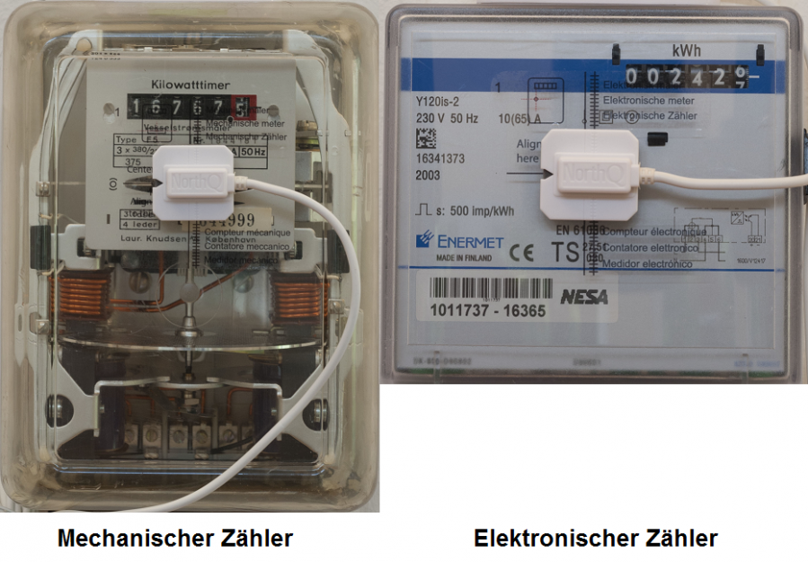

NOQ_NQ-9021
Firmware Version : 2.55 |
 |
Kurzinfo
S Dieses Gerät ist ein Z-Wave Sensor. Drücken Sie zum Inkludieren oder Exkludieren des Gerätes dreimal den Taster am Sensor. Einmaliges Drücken des Tasters weckt das Gerät auf und hält es eine kurze Zeit im Wachzustand.
Weitergehende Informationen finden sich in den jeweiligen Abschnitten dieses Handbuches.
Was ist Z-Wave?
Dieses Produkt entspricht dem Z-Wave-Standard. Z-Wave ist der internationale Funkstandard zur Kommunikation von Geräten im intelligenten Haus. Z-Wave-Geräte funken in Europa auf der Frequenz von 868.42 MHz.Z-Wave ermöglicht eine sichere und stabile Kommunikation indem jede Nachricht vom Empfänger rückbestätigt wird (Zweiwege-Kommunikation) und alle netzbetriebenen Geräte Nachrichten weiterleiten (Routing) können, wenn eine direkte Funkbeziehung zwischen Sender und Empfänger gestört ist.
Dank Z-Wave können Produkte unterschiedlicher Hersteller miteinander in einem Funknetz verwendet werden. Damit ist auch dieses Produkt mit beliebigen anderen Produkten anderer Hersteller in einem gemeinsamen Z-Wave Funknetz einsetzbar.
Z-Wave unterscheidet zwischen Controllern und Slaves. Slaves sind entweder Sensoren S, die Daten ermitteln oder Aktoren A, die Aktionen ausführen (Sensoren und Aktoren sind mitunter in einem Gerät vereint). Controller sind entweder statische netzgespeiste Controller C (auch IP-Gateways genannt) oder mobile batteriebetriebene Controller (Fernbedienungen, Batteriewandschalter)R. Damit ergeben sich eine Reihe prinzipieller Kommunikationsmöglichkeiten in einem Z-Wave-Netz:

- Controller steuern Aktoren.
- Aktoren melden Änderungen ihres Schaltzustandes
- Sensoren melden Messwerte oder Statusänderungen an Controller
- Sensoren steuern Aktoren direkt bei Ereignissen
- Aktoren steuern andere Aktoren
- Fernbedienungen erzeugen Ereignisse in einem statischen Controller, die zum Beispiel zum Steuern von Szenen genutzt werden
- Fernbedienungen steuern Aktoren
Controller können in einem Z-Wave Netzwerk zwei unterschiedliche Rollen einnehmen. Es gibt immer genau einen Primärcontroller der das Netzwerk steuert und Geräte in das Netzwerk inkludiert oder aus dem Netzwerk exkludiert. Dieser Controller kann weiter Nutzerfunktionen - zum Beispiel Tasten - besitzen. Alle anderen Controller mit Nutzerfunktionen erfüllen keine Managementaufgaben. Sie heißen Sekundärcontroller. Trotzdem verfügen sie - sozusagen als Backup - über alle notwendigen Informationen über das Netz. Das Übersichtsbild zeigt, das - batteriegestützt - Sensoren nicht direkt mit - batteriebetriebenen - Fernbedienungen kommunizieren. Sie senden nur Daten an statische Controller oder steuern Aktoren direkt.
Produktbeschreibung
Mit dem Z-Wave Smart Meter Sensor können alle Arten von elektrischen Stromzählern (Feraris, Digital, Smart) ausgelesen und der Zählerstand per Z-Wave übermittelt werden. Das Gerät ist universell in Z-Wave-Funknetzen einsetzbar- es wird jedoch kostenfrei eine Windows-Software zur Darstellung und Auswertung der Zählerstände mitgeliefert. Der Sensor ist sehr leicht zu installieren. Der Impuls-Aufnehmer am Zähler ist vom Z-Wave Sensor getrennt, damit die Funkverbindung von außerhalb eines Zählerschrankes erfolgen kann. Dies erhöht gegebenenfalls die Reichweite der Funkverbindung. Der Sensor zählt alle Zählimpulse und meldet diese sowohl als Zählimpuls als auch bereits umgerechnet auf KWh. Das Gerät ermittelt den Zählerstand aller 15 Minuten und kann Werte bis zu 3 Monate speichern. Eine permanente Funkverbindung ist daher nicht unbedingt notwendig.
Im Lieferumfang enthalten ist:
- Der Z-Wave Funk Sensor
- Batterien
- Kontakt-Sensor für den Zähler
- fertig bedruckte Schablonen um den Sensor am Zähler anzubringen
- ein Schraubendreher für die Wandmontage
- ein Werkzeug zur Einstellung des Sensors bei Mechanischen Zählern
- kostenlose Windows Software für die Datenauswertung
Batterien
Dieses Gerät wird mit Batterien betrieben. Nur Batterien des angegebenen Typs verwenden. Niemals alte und neue Batterien im gleichen Gerät vermischen. Gebrauchte Batterien enthalten gefährliche Stoffe und dürfen nicht mit dem Hausmüll entsorgt werden!
Batterietyp: 2 * AA
Installationsanleitung
Reinigen Sie vor der Installation das Gehäuse Ihres Stromzählers, damit der NorthQ Power Reader alle Werte ordnungsgemäß ablesen kann.
Es ist wichtig die richtigen Daten bezüglich Zählertyp und Impulswert herauszufinden. Man findet diese Informationen normalerweise auf der Forderseite des Zählers.
Es gibt zwei Typen von Stromzählern: mechanische und elektronische Zähler. Der NorthQ Power Reader funktioniert mit neuen und alten Zählern.
Mechanische Zähler
Bei mechanischen Zählern wird die Bewegung der Scheibe gemessen. Der Wert Umdrehungen/kWh ist auf dem Zähler angegeben.
Electronische Zähler
Bei elektronischen Zählern wird der Lichtimpuls gemessen. Der Wert Lichtimpuls/kWh ist auf dem Zähler angegeben. Bei einigen elektronischen Zählern erfolgt der Impuls über Infrarot. Dieser wird auch von dem NorthQ Power Reader gemessen.
Um alle Funktionen des NorthQ Power Reader zu nutzen, sollten Sie eine Jahresabrechnung oder einen Zwischenbescheid Ihres Energieversorgungsunternehmens zur Hand haben. Diesem Bescheid können Sie den Preis pro kWh entnehmen. Einige Energieversorgungsunternehmen geben den Co2 Wert pro kWh an. Diese Informationen können Sie ebenfalls eingeben und sich veranschaulichen.

- Geben Sie die notwendigen Informationen in die Eingabemaske ein.
- Für die Installation nehmen Sie als erstes das Sensorkabel und stecken es in den Funksender. Der Stecker rastet hörbar ein. Ist der Stecker nicht richtig eingerastet kann es zu Fehlern kommen.
- Befestigen Sie die Abdeckung darüber und fixieren diese mit den 3 Schrauben unter Zuhilfenahme des Schraubendrehers. Dies verhindert das Verrutschen des Sensorkabels. Setzen Sie nun die Batterien unten in den Funksender ein. Dies ist erfolgreich wenn der Funksender blinkt.
- Betätigen Sie "weiter" wenn die Montage des Funksender abgeschlossen ist, und Sie bereit sind, die Funkverbindung zwischen dem Funksender mit dem PC herzustellen.
- Funkverbindung herstellen: Stecken Sie den USB Stick an einen freien USB-Port im Computer. Der Funksender kann die Messdaten von 60 Tagen speichern. Es können nur Daten an übertragen werden wenn der USB-Stick angeschlossen ist. Warten Sie bis der USB-Stick vom Computer erkannt wurde. Ist der USB-Stick erkannt kann die Funkverbindung hergestellt werden. Dies geschieht durch dreimaliges drücken des Tasters an der Unterseite des Funksender. Die LED leuchtet 3 mal zur Bestätigung. Danach blinkt die LED 1 mal zur Bestätigung der Verbindung und auf dem Bildschirm erscheint "Funksender gefunden".
- Prüfen der Funkreichweite: Vor der Installation des Funksenders auf Ihrem Zähler sollten Sie die Reichweite des USB-Stick prüfen. Betätigen Sie den Taster des Funksenders 4 mal während Sie neben Ihrem Zähler stehen. Der Funksender blinkt zur Bestätigung 4 mal. Der USB-Stick sendet 10 Sekunden lang jede Sekunde ein Signal. Ist der Funksender innerhalb der Reichweite leuchtet die LED. Je länger die LED leuchtet desto besser ist das Signal. Leuchtet die LED für 10 Sekunden, signalisiert dies eine gute Verbindung. Blinkt die LED während der 10 Sekunden, signalisiert dies eine schlechtere Verbindung. Sie sollten die Distanz zwischen den USB-Stick und den Funksender verkürzen. Ein langes Kabel zwischen dem Sensor und dem Funksender sorgt für Flexibilität bei der Wahl des Standortes und für eine optimale Verbindung. Leuchtet die LED während der ganzen Zeit nicht, ist der Funksender außerhalb der Reichweite. Sie sollten die Distanz zwischen den USB-Stick und den Funksender verkürzen, um eine Verbindung herzustellen. Auf Ihrem Computer sehen Sie eine kurze Information über die Verbindungsstärke. Betätigen Sie "weiter" um fortzufahren.

Installation auf mechanischen Zählern:
1. Zuerst entfernen Sie den weißen Hintergrund der Schablone. Platzieren Sie die Schablone auf dem Zähler. Die horizontale Linie muss mit der rotierenden Scheibe übereinstimmen und die linke vertikale Linie muss mit der Markierung in der Mitte des Zählers übereinstimmen. Danach ziehen Sie den Mittelteil der Schablone ab. Jetzt können Sie den Sensor auf dem Zähler anbringen. Der Sensor sollte in der Mitte der Schablone befestigt werden. Die 2 vertikalen Linien des Sensor und der Schablone müssen übereinstimmen. Entfernen Sie die 2 roten Abdeckungen der Klebestreifen auf der Vorderseite des Sensor und befestigen Ihn auf dem Zähler.
2. Zähler Anpassung: Da der NorthQ Power Reader auf diversen mechanischen Zählern funktioniert ist eine automatische Anpassung notwendig. Drücken Sie den Taster 5 mal. Am Anfang blinkt die LED sehr schnell. Beim Abschluss der Anpassung blinkt die LED langsamer. Ist die Anpassung erfolgreich, blinkt die LED nur wenn die Scheibe den Sensor passiert. Bei Problemen positionieren Sie den Sensor an einer anderen Stelle, zum Beispiel an der Seite. Bei Kratzern oder Fertigungsfehlern auf der Vorderseite des Zählers ist es nötig, den Sensor an einer anderen Stelle zu platzieren.
Installation auf elektronischen Zählern:
Zuerst entfernen Sie den weißen Hintergrund der Schablone. Platzieren Sie die Schablone auf dem Zähler. Die horizontale Linie und die rechte vertikale Linie muss genau auf der LED platziert werden. Danach ziehen Sie den Mittelteil der Schablone ab. Jetzt können Sie den Sensor auf dem Zähler anbringen. Der Sensor sollte in der Mitte der Schablone befestigt werden. Die 2 vertikalen Linien des Sensor und der Schablone müssen übereinstimmen. Entfernen Sie die 2 roten Abdeckungen der Klebestreifen auf der Vorderseite des Sensor und befestigen Ihn auf dem Zähler.
Beachte: Es ist sehr wichtig die Schablone genau aufzubringen, da sonst das Messergebnis des NorthQ Power Readers verfälscht wird!
Geben Sie den Zählerstand ein. Sie können damit feststellen ob Ihr NorthQ Power Reader richtig arbeitet. Zum Abschluss betätigen Sie "Installation abschließen".
Jetzt müssen Sie 30 Minuten warten bis genug Daten gesammelt wurden, um die ersten Tabellen und Grafiken anzuzeigen. Um den aktuellen Zählerstand anzuzeigen, können Sie in den Echtzeiz-Modus wechseln.
Verhalten des Gerätes im Z-Wave Netz
I Im Auslieferungszustand ist das Gerät mit keinem Z-Wave-Netz verbunden. Damit es mit anderen Z-Wave Geräten kommunizieren kann, muss es in ein bestehendes Z-Wave Netz eingebunden werden. Dieser Prozess wird bei Z-Wave Inklusion genannt. Geräte können Netzwerke auch wieder verlassen. Dieser Prozess heißt bei Z-Wave Exklusion. Beide Prozesse werden von einem Controller gestartet, der dazu in einen Inklusion- bzw. Exklusion-Modus geschaltet werden muss. Das Handbuch des Controllers enthält Informationen, wie er in diese Modi zu schalten ist. Erst wenn der Controller des Z-Wave Netzes im Inclusion-Modus ist, können Geräte hinzugefügt werden. Das Verlassen des Netzes durch Exklusion führt zum Rücksetzen dieses Gerätes in den Auslieferungszustand.
Bringen Sie Ihren Z-Wave Controller in den Inklusions-/Exklusionsmodus. Ein Dreifachklick auf die Z-Wave Taste am Funk Sensor bestätigt den Vorgang.
Bedienung des Gerätes
Standard Modus:
Um die Lebensdauer der Batterien zu verlängern, überträgt der Funksender nur alle 15 Minuten die gesammelten Daten an den USB Empfänger.
Echtzeit Modus:
Sie können jederzeit durch 1-maliges betätigen des Tasters in den Echtzeit Modus wechseln. Ist der NorthQ Power Reader im Echtzeit Modus, sendet der Funksender alle 5 Sekunden Daten zu dem USB-Stick. Diese Funktion ist sinnvoll um den aktuellen Stromverbrauch zu prüfen oder um nicht auf die automatische Übertragung warten zu müssen. Der NorthQ Power Reader bleibt 10 Minuten im Echtzeit Modus. Danach geht er automatisch in den energiesparenden Standard Modus zurück.
Im Echtzeit Modus blinkt die LED auf dem Funksender immer wenn ein Impuls registriert wird.
Die häufige Benutzung des Echtzeit Modus verkürzt die Lebensdauer der Batterie. Die normale Lebensdauer beträgt 1,5 Jahre bei elektronischen und 1 Jahr bei mechanischen Zählern.
Um den Echtzeit Modus früher wieder zu verlassen und in den Standard Modus zurückzukehren, drücken Sie 2 mal den Taster.
Kommunikation mit einem batteriebetriebenen Gerät
W Das Gerät ist batteriegespeist und damit in der Regel in einem Tiefschlafmodus um Strom zu sparen. Im Tiefschlafmodus kann das Gerät keine Funksignale empfangen. Daher wird ein (statischer) Controller benötigt, der netzgespeist und damit immer funkaktiv ist. Dieser Controller - zum Beispiel ein IP-Gateway - verwaltet eine Nachrichten-Mailbox für dieses batteriegespeiste Gerät, in dem Nachrichten an dieses Gerät zwischengespeichert werden. Ohne einen solchen statischen Controller wird die Nutzung dieses batteriebetriebenen Gerätes sehr schnell zur Entladung der Batterie führen oder die Nutzung ist komplett unmöglich.
Dieses Gerät weckt regelmäßig auf, meldet dies durch Aussenden einer sogenannten Wakeup-Notifikation und leert dann seine Mailbox im statischen Controller. Dafür muss bei der Inclusion die Node-ID des Controllers und ein Aufweckinterval definiert werden. Erfolgt die Inklusion durch einen statischen Controller wie zum Beispiel ein IP-Gateway, wird dieser Controller diese Konfiguration automatisch erledigen und in der Regel eine Nutzerschnittstelle anbieten, um das Aufweckinterval den Nutzerbedürfnissen anzupassen. Das Aufweckinterval ist ein Kompromiss zwischen maximaler Batterielaufzeit und minimaler Reaktionszeit des batteriegespeisten Gerätes.
Der Einfachklick auf die Z-Wave Taste am Funk Sensor weckt das Gerät auf.
Es ist möglich die Gerätenummer 255 als Zielgerät für die Wakeup-Notifikation anzugeben. In diesem Falle wird die Nachricht als Broadcast an alle Geräte mit direkter Funkverbindung gesendet. Dem Vorteil der sofortigen Benachrichtigung steht als Nachteil gegenüber, das das Gerät gegebenenfalls mehr Zeit im aktiven Modus und damit mehr Batterieladekapazität verbraucht.
Node Information Frame
NIF Der Node Information Frame ist die Visitenkarte eines Z-Wave Gerätes. Es ist ein spezielles Datenpaket, in dem der Gerätetyp sowie die Funktionen des Gerätes bekanntgemacht werden. Inklusion und Exklusion eines Gerätes wird von diesem mit einem Node Information Frame beantwortet. Zusätzlich kann der Node Information Frame für bestimmte Konfigurationsprozesse des Z-Wave Netzes - zum Beispiel das Setzen von Assoziationen - benötigt werden.
Ein Dreifachklick auf die Z-Wave Taste am Funk Sensor führt zum Aussenden eines Node Information Frame.
Konfigurationseinstellungen
Z-Wave Produkte können direkt nach der Inklusion im Netz verwendet werden. Durch Konfigurationseinstellungen kann das Verhalten des Gerätes jedoch noch besser an die Anforderungen der Anwendung angepasst und zusätzliche Funktionen aktiviert werden.
WICHTIG: Manche Steuerungen erlauben nur die Konfiguration von vorzeichenbehafteten Werten zwischen -128 und 127. Um erforderliche Werte zwischen 128 und 255 zu programmieren, muss der gewünschte Wert minus 256 eingegeben werden. Beispiel: um einen Parameter auf einen Wert von 200 zu setzen, müsste der Wert 200-256 = -56 eingegeben werden, wenn nur positive Werte bis 128 akzeptiert werden. Bei Werten von 2 Byte Länge wird die gleiche Logik angewandt: Werte über 32768 werden als negative Werte angegeben
| Wert | Beschreibung |
|---|---|
| 0 — 65535 | Pulse (Voreingestellt 1024) |
| Wert | Beschreibung |
|---|---|
| 1 | Pulszähler |
| 2 | rotierende Scheibe (Voreingestellt) |
| Wert | Beschreibung |
|---|---|
| 0 — 255 | . (Voreingestellt 0) |
| Wert | Beschreibung |
|---|---|
| 0 — 255 | . (Voreingestellt 0) |
| Wert | Beschreibung |
|---|---|
| 0 — 50 | mal (Voreingestellt 20) |
| Wert | Beschreibung |
|---|---|
| 0 — 143 | . (Voreingestellt 0) |
| Wert | Beschreibung |
|---|---|
| 0 — 143 | . (Voreingestellt 5) |
| Wert | Beschreibung |
|---|---|
| 0 — 65535 | s (Voreingestellt 0) |
| Wert | Beschreibung |
|---|---|
| 0 — 4.294967295e+09 | Pulse (Voreingestellt 0) |
| Wert | Beschreibung |
|---|---|
| 0 — 65535 | s (Voreingestellt 3) |
| Wert | Beschreibung |
|---|---|
| 0 — 65535 | s (Voreingestellt 0) |
| Wert | Beschreibung |
|---|---|
| 0 | Aus |
| 1 | LED blinkt bei Zählimpuls (Voreingestellt) |
Kommandoklassen
Unterstützte Kommandoklassen- Basic (Version 1)
- Battery (Version 1)
- Wake Up (Version 1)
- Version (Version 1)
- Time Parameters (Version 1)
- Manufacturer Specific (Version 1)
- Configuration (Version 2)
- Manufacturer Proprietary (Version 1)
- Meter (Version 2)
- Firmware Update Meta Data (Version 2)
- Meter Table Monitor (Version 1)
- CRC-16 Encapsulation (Version 1)
- CRC-16 Encapsulation (Version 1)
Technische Daten
| Batterietyp | 2 * AA |
| Explorer Frames | Nein |
| SDK | 5.02 pl3 |
| Geräteart | Slave with routing capabilities |
| Allgemeiner Z-Wave-Gerätetyp | Meter |
| Spezieller Z-Wave-Gerätetyp | Simple Meter |
| Router | Nein |
| FLiRS | Nein |
| Firmware Version | 2.55 |
Erläuterung Z-Wave-spezifischer Begriffe
- Controller... ist ein Z-Wave-Gerät mit erweiterten Fähigkeiten zur Verwaltung eines Netzes. Dies sind in der Regel Gateways oder Fernbedienungen. Batteriegespeiste Wandschalter können auch Controller sein.
- Slave... ist ein Z-Wave-Gerät mit erweiterten Fähigkeiten zur Verwaltung eines Netzes. Es gibt Sensoren, Aktoren und auch Fernbedienungen als Slaves.
- Primärcontroller (engl. Primary Controller)... ist der zentrale Netzverwalter des Z-Wave-Netzes.
- Inklusion (eng. Inclusion)... ist der Prozess des Einbindens eines neuen Gerätes ins Z-Wave-Netz.
- Exklusion (engl. Exclusion)... ist der Prozess des Entfernens eines Gerätes aus dem Z-Wave-Netz.
- Assoziation (engl. Association)... ist eine Steuerbeziehung zwischen einem steuernden und einem gesteuerten Gerät. Die Information dazu wird im steuernden Gerät in einer Assoziationsgruppe hinterlegt.
- Wakeup Notifikation (engl. Wakeup Notification) ... ist eine spezielle Funknachricht, mit der ein batteriegespeistes Gerät bekanntmacht, daß es im Aufwachstatus ist und Z-Wave-Nachrichten empfangen kann.
- Node Information Frame... ist eine spezielle Funknachricht, mit der ein Z-Wave-Gerät seine Geräteeigenschaften bekanntgibt.
Entsorgungshinweis
Dieses Gerät enthält Batterien. Bitte beachten Sie die gültigen Entsorgungsvorschriften für Batterien.
Das ist ein elektrisches Gerät. Es kann kostenfrei bei entsprechenden Annahmestellen abgegeben werden.